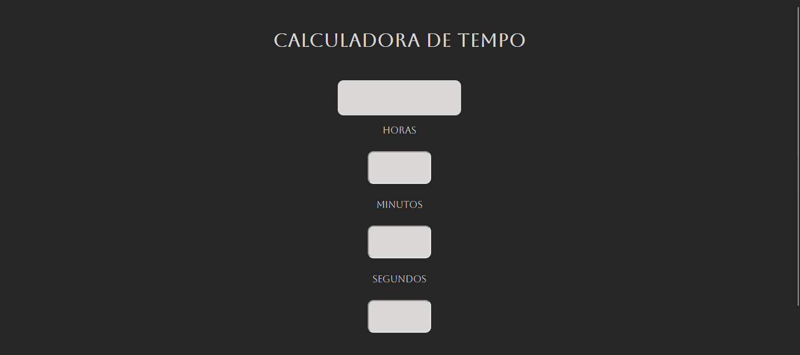
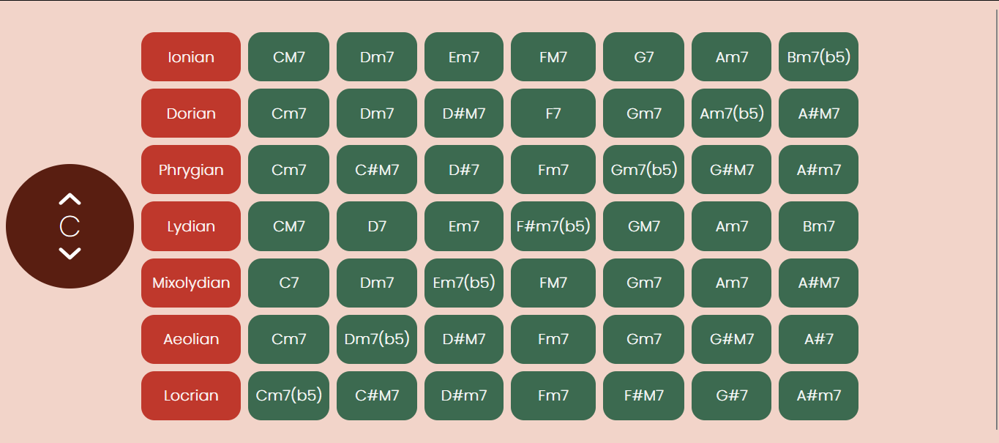

Construi uma calculadora que ajudasse a contabilizar o tempo de video-aulas de calculo que deveria assistir para ajudar a organizar meu plano de estudos, alem de praticar os conhecimentos em CSS, HTML e JavaScript
Desenvolvi um aplicativo para gerar escalas dos modos gregos, com foco em facilitar seu uso por musicos. O projeto aplicou conceitos do livro The Practice of Programming e aprimorou meus conhecimentos em desenvolvimento web.
